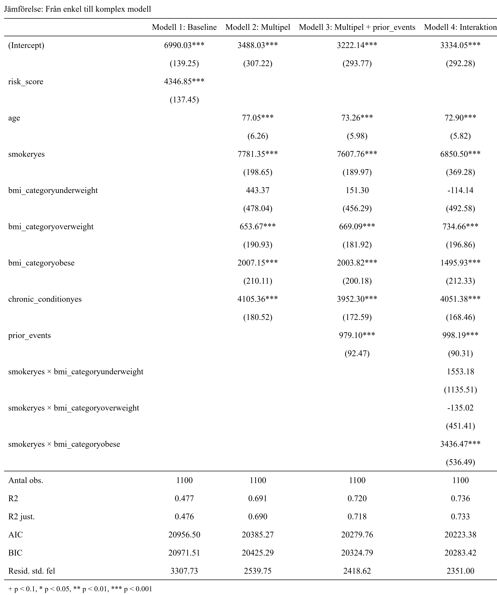

data_raw <- read_csv("data/insurance_costs.csv", show_col_types = FALSE)Analys av försäkringskostnader
Inledning
Jag, en analytiker på det påhittade försäkringsbolaget Villkor i Finstil, har fått i uppdrag att
identifiera vilka faktorer som driver försäkringskostnader
utvärdera om nuvarande prissättning följer rimliga mönster
undersöka om en regressionsmodell kan användas som stöd vid framtida prissättning
Dataförståelse
Ladda in data
Storlek, struktur och variabeltyper
glimpse(data_raw)Rows: 1,100
Columns: 14
$ customer_id <chr> "C100000", "C100001", "C100002", "C100003", "C100004…
$ age <dbl> 48, 40, 50, 62, 39, 39, 63, 52, 36, 49, 36, 36, 45, …
$ sex <chr> "female", "male", "female", "male", "female", "femal…
$ region <chr> "east", "west", "south", "north", "east", "west", "e…
$ bmi <dbl> 24.8, 29.5, 18.3, 25.5, 27.3, 23.3, 23.9, 24.8, 28.6…
$ children <dbl> 0, 1, 2, 5, 2, 4, 3, 2, 0, 2, 2, 2, 1, 1, 1, 1, 0, 3…
$ smoker <chr> "no", "no", "no", "yes", "no", "no", "no", "no", "no…
$ chronic_condition <chr> "no", "no", "no", "no", "no", "no", "no", "no", "yes…
$ exercise_level <chr> "high", "medium", "high", "medium", "medium", "high"…
$ plan_type <chr> "basic", "basic", "standard", "basic", "basic", "sta…
$ prior_accidents <dbl> 0, 0, 0, 0, 0, 0, 0, 0, 0, 1, 0, 1, 0, 0, 0, 0, 0, 0…
$ prior_claims <dbl> 0, 1, 0, 0, 1, 0, 0, 0, 1, 0, 0, 1, 0, 1, 3, 0, 0, 0…
$ annual_checkups <dbl> 1, 4, 3, NA, 0, 2, 1, 2, 3, 2, 3, 3, 4, 4, 2, 1, 2, …
$ charges <dbl> 6439.10, 8274.06, 5190.99, 14500.35, 6534.40, 8026.3…Datasetet består av 1100 rader (observationer) och 14 kolumner.
En rad är en kund.
Kategoriska variabler:
customer_id
sex
region
smoker
chronic_condition
exercise_level
plan_type
Numeriska variabler:
age
bmi
children
prior_accidents
prior_claims
annual_checkups
charges
Dubbletter
Identiska rader
data_raw %>%
duplicated() %>%
sum()[1] 0duplicated() kollar vilka rader som är dubbletter och returnerar en logisk lista med TRUE och FALSE. sum() summerar alla värden i listan, men då TRUE = 1 och FALSE = 0 så är det antalet TRUE som blir resultatet. I det här fallet är antalet identiska rader 0.
Förekommer samma kund flera gånger?
data_raw %>%
count(customer_id) %>%
filter(n > 1)# A tibble: 0 × 2
# ℹ 2 variables: customer_id <chr>, n <int>count() räknar varje customer_id och lägger resultatet i en tabell med kolumnerna customer_id och n (antal). filter(n > 1) tar sedan fram de rader där n är större än 1. Resultatet är en tibble med 0 rader, dvs samma customer_id finns inte med fler än en gång.
Samma kunddata, men olika id:n
data_raw %>%
select(-customer_id) %>%
duplicated() %>%
sum()[1] 0Här används duplicated() igen för att kolla vilka rader som är dubbletter, men customer_id är borträknat. Även här är resultatet en tom lista.
Jag undersökte dubblerad data på tre sätt:
Identiska rader
Samma kund på flera ställen
Samma kund med olika id:n
Dubbletter gör datan skev och inte lika tillförlitlig. Identiska rader är lätta att hantera: en av raderna tas bort. Om samma kund finns på flera ställen, antingen med samma id och olika data eller med exakt samma data fast olika id:n tyder detta på inkonsekvenser vid datalagringen. Detta går inte hantera utan att först kolla med den som äger systemet som datan kommer ifrån. Har en ny kund av misstag fått ett upptaget id? Har en gammal kund av misstag skapats igen? Eller är det mot all förmodan så att två separata individer har exakt samma värden i samtliga variabler? Detta kan ägaren till systemet svara på, men går det inte att få något svar får all duplicering tas bort.
Som tur är innehåller detta dataset inga dubbletter.
Saknade värden
data_raw %>%
summarise(across(everything(), ~ sum(is.na(.)))) %>%
pivot_longer(everything()) %>%
mutate(andel = value / nrow(data_raw) * 100) %>%
arrange(desc(andel))# A tibble: 14 × 3
name value andel
<chr> <int> <dbl>
1 bmi 28 2.55
2 exercise_level 22 2
3 annual_checkups 20 1.82
4 customer_id 0 0
5 age 0 0
6 sex 0 0
7 region 0 0
8 children 0 0
9 smoker 0 0
10 chronic_condition 0 0
11 plan_type 0 0
12 prior_accidents 0 0
13 prior_claims 0 0
14 charges 0 0 summarise() skapar en sammanfattning av datasetet och resultatet blir en ny, mindre tabell.
across() betyder “gör samma sak över flera kolumner” och det som ska göras är sum(is.na()), alltså summera alla NA.
everything() gör så att funktionen körs på alla kolumner. Punkten i na(.) är en placeholder för varje kolumn.
pivot_longer() gör om tabellen från “bred” till “lång”. Utan pivot_longer() blir tabellen ungefär så här:
| customer_id | bmi | age | prior_claims |
| 0 | 3 | 0 | 2 |
Men med pivot_longer() blir tabellen ännu mer sammanfattande:
| name | value |
| customer_id | 0 |
| bmi | 3 |
| age | 0 |
| prior_claims | 2 |
Dvs att varje “orginalkolumn” hamnar i en ny kolumn “name” och antalet NA per kolumn hamnar i den nya kolumnen “value”.
mutate() skapar ytterligare en kolumn “andel” som beräknar andelen NA per variabel.
arrange() sorterar tabellen så variabeln med högst andel saknade värden ligger överst.
Resultatet blir som sagt en ny tabell och i det här fallet kan vi se att det finns NA i tre variabler: bmi, exercise_level och annual_checkups med totalt 70 NA. Dessa behöver hanteras i nästa del: Dataförberedelse.
Finns det observationer med fler än en NA?
Men är det 70 separata observationer som har NA:s eller finns det observationer som har NA i fler än en variabel?
Det här är relevant att veta inför hanteringen av NA. Om man väljer att ta bort alla rader med NA är det 70 observationer som försvinner eller bara 5?
gg_miss_upset(data_raw)
gg_miss_upset() är en funktion från paketet naniar. Det den gör är i princip samma sak som ovan - räknar saknade värden per kolumn och summerar - men gg_miss_upset() hittar också kombinationer av NA:s som förekommer tillsammans och ritar alltihopa i en snygg plot.
Av figuren kan vi utläsa att endast en observation har fler än en NA och att de är i variablerna bmi och exercise_level som dessa sakande värden förekommer.
Detta innebär att om NA:s hanteras genom radering så kommer 69 observationer försvinna.
Inkonsekvenser
Kategoriska variabler
data_raw %>%
select(where(is.character), -customer_id) %>%
pivot_longer(everything()) %>%
distinct(name, value) %>%
group_by(name) %>%
summarise(
kategorier = paste(value, collapse = ", ")
)# A tibble: 6 × 2
name kategorier
<chr> <chr>
1 chronic_condition no, yes
2 exercise_level high, medium, low, NA
3 plan_type basic, standard, premium, Premium, Standard
4 region east, west, south, north, North, South
5 sex female, male
6 smoker no, yes, Yes select(where(is.character), -customer_id) väljer alla kategoriska variabler förutom customer_id (för den är inte av intresse)
distinct() plockar ut alla unika värden ur både name (variabel) och value (kategorier inom variablerna). group_by() slår sedan ihop dem per kolumn.
summarise() skapar en sammanfattande kolumn - “kategorier” - där alla värden i value slås ihop till en enda textsträng, där varje value separeras av ett kommatecken.
Inkonsekvenser i kategoriska variabler är exempelvis olika stavningar för samma sak, eller att ett ord ibland börjar med stor bokstav och ibland med liten bokstav. I tabellen framgår det att dessa inkonsekvenser finns i datasetet och detta kommer hanteras i avsnittet “Datastädning”.
Numeriska variabler
data_raw %>%
select(where(is.numeric)) %>%
summary() age bmi children prior_accidents
Min. :18.00 Min. :17.00 Min. :0.000 Min. :0.0000
1st Qu.:34.00 1st Qu.:24.30 1st Qu.:0.000 1st Qu.:0.0000
Median :42.50 Median :27.50 Median :1.000 Median :0.0000
Mean :42.51 Mean :27.43 Mean :1.575 Mean :0.2382
3rd Qu.:51.00 3rd Qu.:30.60 3rd Qu.:3.000 3rd Qu.:0.0000
Max. :75.00 Max. :44.00 Max. :5.000 Max. :3.0000
NA's :28
prior_claims annual_checkups charges
Min. :0.0000 Min. :0.00 Min. : 1204
1st Qu.:0.0000 1st Qu.:1.00 1st Qu.: 6837
Median :0.0000 Median :2.00 Median : 9124
Mean :0.2718 Mean :2.09 Mean :10060
3rd Qu.:0.0000 3rd Qu.:3.00 3rd Qu.:12710
Max. :3.0000 Max. :4.00 Max. :32559
NA's :20 För att få fram inkonsekvenser i de numeriska variablerna väljer jag att göra en summary() på data_raw, men bara på “is.numeric”.
Inkonsekvenser i numeriska variabler är exempelvis negativa tal på ställen där det inte är realistiskt möjlig, som exempelvis age, bmi eller annual_checkups. Orimligt höga värden är också inkonsekvenser. Än så länge finns det ingen människa äldre än 120 år eller som har ett bmi på över 180 (#JonBrowerMinnoch #Murica) så där hade jag fått dra gränsen.
Men den främsta användningen av summary() är att kolla datans fördelning, skevhet och outliers.
Charges:
Medelvärdet högre än medianen. Tyder på högerskev fördelning.
Maxvärdet är mer än 2,5 gånger större än 3:e kvartilen. Tyder på outliers i den övre delen av spektrat.
BMI:
Medelvärdet och medianen är nästan exakt lika stora. Tyder på normalfördelning.
1:a kvartilen börjar på 24,30 vilket innebär att 75 % av populationen ligger i kategorin övervikt eller fetma (BMI > 25)
Age:
Medelvärdet och medianen är nästan identiska. Tyder på normalfördelning.
Avståndet mellan kvartilerna är relativt konstant vilket innebär en jämn spridning mellan åldrarna
Fördelning
Kategoriska variabler
data_raw %>%
select(where(is.character), -customer_id) %>%
pivot_longer(everything()) %>%
count(name, value) %>%
group_by(name) %>%
mutate(andel = n / sum(n) * 100) %>%
arrange(desc(n), .by_group = TRUE) %>%
print(n = Inf)# A tibble: 22 × 4
# Groups: name [6]
name value n andel
<chr> <chr> <int> <dbl>
1 chronic_condition no 832 75.6
2 chronic_condition yes 268 24.4
3 exercise_level medium 561 51
4 exercise_level low 307 27.9
5 exercise_level high 210 19.1
6 exercise_level <NA> 22 2
7 plan_type standard 549 49.9
8 plan_type basic 339 30.8
9 plan_type premium 201 18.3
10 plan_type Premium 7 0.636
11 plan_type Standard 4 0.364
12 region south 315 28.6
13 region west 264 24
14 region north 255 23.2
15 region east 253 23
16 region North 8 0.727
17 region South 5 0.455
18 sex female 551 50.1
19 sex male 549 49.9
20 smoker no 896 81.5
21 smoker yes 200 18.2
22 smoker Yes 4 0.364Inför analys är det alltid viktigt att veta hur stora de olika grupperna är.
I den här tabellen kan vi exempelvis se att ungefär 25 % av populationen har ett kroniskt tillstånd och att fördelningen mellan män och kvinnor är jämn.
Numeriska variabler
hist_plot_eda <- data_raw %>%
select(age, bmi, charges) %>%
pivot_longer(everything()) %>%
ggplot(aes(x = value)) +
geom_histogram(bins = 30, fill = "lightblue", color = "black") +
facet_wrap(~name, scales = "free") +
labs(
title = "Fördelning av age, bmi och charges",
x = "Värde",
y = "Antal"
) +
theme_minimal() +
theme(plot.title = element_text(hjust = 0.5))Här gör pivot_longer(everything()) att ggplot() kan rita alla tre variabler samtidigt. Alla värden från bmi, age och charges ligger i value.
facet_wrap() skapar en separat graf för varje variabel i name.
scales = “free” gör att varje graf får egna axelskalor vilket är ett måste eftersom charges innehåller så mycket större värden jämfört med age och bmi.
theme_minimal() ger graferna ett enklare och renare utseende.
element_text(hjust = 0.5) centrerar rubriken.
hist_plot_eda
Figuren bekräftar det vi misstänkte tidigare:
Charges är högerskev med en tydlig svans av outliers vid höga värden.
BMI följer en normalfördelning
Men Age har en mer oregelbunden fördelning med flera toppar, en vid 35-40 och en vid 45-50 år. Detta tyder på en ojämn representation av åldersgrupper i datan.
box_plot_eda <- data_raw %>%
select(age, bmi, charges) %>%
pivot_longer(everything()) %>%
ggplot(aes(y = value)) +
geom_boxplot(fill = "lightblue", color = "black") +
facet_wrap(~name, scales = "free") +
labs(
title = "Boxplots för age, bmi och charges",
x = NULL,
y = "Värde"
) +
theme_minimal() +
theme(plot.title = element_text(hjust = 0.5),
axis.text.x = element_blank(),
axis.ticks.x = element_blank()
)På samma sätt som med histogrammet plottas en facetterad boxplot.
Då x-axeln inte är av intresse tas denna bort med axis.text.x = blank och axis.ticks.x = blank.
box_plot_eda
Figuren bekräftar att det finns flertalet outliers inom Charges. Många runt 25 000, men även en över 30 000. Boxploten bekräftar också att fördelningen är högerskev. Detta ser vi då boxen ligger långt ner i förhållande till maxvärdet.
För BMI syns nu tydligt att det finns några outliers i det övre spannet, men för övrigt är fördeningen inom BMI symmetrisk.
Age har inga outliers och boxen är stor och centralt placerad vilket visar på bra spridning av observationer i åldrarna 35-50 år.
Datastädning och förberedelse
Funktion för att få typvärdet (mode)
get_mode <- function(x) {
ux <- unique(na.omit(x))
ux[which.max(tabulate(match(x, ux)))]
}I föregående avsnitt upptäckte vi att exercise_level innehöll 22 NA:n och att 22 observationer motsvarar 2 % av hela datan. Vi kunde också se att exercise_level bestod av 3 kategorier: low, medium och high med en rimlig fördelning inom kategorierna (low = 307, medium = 561 och high = 210 observationer).
Eftersom datasetet redan är litet är jag motvillig att ta bort något. Eftersom kategorin medium redan var så stor valde jag att ersätta alla saknade värden i exercise_level med det vanligaste, medium. Men för att göra koden säker inför framtiden då datan kan ändras skapade jag en funktion som tar fram det vanligaste värdet (mode) istället för att hårdkoda.
Städa och feature engineering i samma pipe
data_clean <- data_raw %>%
mutate(
# Standardisera text
across(where(is.character), ~str_to_lower(str_trim(.))),
# Hantera saknade värden
bmi = if_else(
is.na(bmi),
median(bmi, na.rm = TRUE),
bmi),
annual_checkups = if_else(
is.na(annual_checkups),
median(annual_checkups, na.rm = TRUE),
annual_checkups),
exercise_level = if_else(
is.na(exercise_level),
get_mode(exercise_level),
exercise_level),
# Logiska variabler för beräkningar
smoker_logic = recode(smoker, "yes" = TRUE, "no" = FALSE),
chronic_condition_logic = recode(chronic_condition, "yes" = TRUE, "no" = FALSE),
# Nya variabler
bmi_category = case_when(
bmi < 18.5 ~ "underweight",
bmi < 25.0 ~ "normal",
bmi < 30.0 ~ "overweight",
TRUE ~ "obese"
),
age_category = case_when(
age < 35 ~ "young",
age < 55 ~ "middle-aged",
TRUE ~ "senior"
),
prior_events = prior_accidents + prior_claims,
risk_score =
as.integer(smoker_logic) +
as.integer(chronic_condition_logic) +
if_else(bmi >= 30, 1, 0),
# Kategoriska variabler till faktorer
smoker = factor(smoker_logic, levels = c(FALSE, TRUE), labels = c("no", "yes")),
chronic_condition = factor(chronic_condition_logic, levels = c(FALSE, TRUE), labels = c("no", "yes")),
region = as.factor(region),
exercise_level = factor(exercise_level, levels = c("low", "medium", "high")),
plan_type = factor(plan_type, levels = c("basic", "standard", "premium")),
sex = as.factor(sex),
bmi_category = factor(bmi_category, levels = c("underweight", "normal", "overweight", "obese")),
age_category = factor(age_category, levels = c("young", "middle-aged", "senior"))
) %>%
select(-smoker_logic, -chronic_condition_logic)Följande städning görs (med utgångspunkt i det som tidigare avsnitt visade):
Alla kategoriska variabler standardiseras, dvs alla mellanslag tas bort och alla bokstäver görs om till gemener
Saknade värden i bmi och annual_checkups ersätts med medianvärdet då detta inte “skjuter” datan åt ett specifikt håll. exercise_level NA:ns ersätts som sagt med det vanligaste värdet mha av funktionen get_mode.
Skapande av nya variabler, val och motivering:
bmi_category och age_category
kategorier ger minskat brus och fångar tröskeleffekter: slumpmässiga variationer mellan exempelvis en 66-åring och 68-åring eller mellan ett bmi på 21 och ett bmi på 23 försvinner när observationerna grupperas, och ger istället en tydligare struktur som är lättare att tolka.
bmi_category följer WHO:s etablerade standarder
prior_events
prior_accidents och prior_claims säger egentligen samma sak (“saker som gör att kunden kostar pengar”), och om variabler korrelerar för mycket med varandra kan det störa vissa statistiska modeller
dessa enskilda variabler innehöll rätt mycket gles data (många 0) och att kombinera dem ger då en variabel med mer variation (mer signal) som gör det lättare för modeller att hitta mönster
risk_score
både rökning, högt bmi och kroniskt tillstånd är risker så precis som med prior_accidents och prior_claims bör dessa hanteras tillsammans och inte var för sig
risk_score ger en bra gruppering av observationerna som är lätt att använda i försäkringssammanhang
risk_score skapas genom att smoker, chronic_condition och bmi vardera kan ge 1 poäng:
smoker_yes = 1 poäng (annars 0)
chronic_condition_yes = 1 poäng (annars 0)
bmi över 30 = 1 poäng (annars 0)
Kategoriska variabler –> faktorer
Alla de kateogriska variablerna i datasetet (+ de nyskapade variablerna age_category och bmi_category) kan användas för att gruppera datan på olika sätt. Därför valde jag att göra dem till faktorer för att förenkla både presentationen samt användningen av dem i regressionsanalysen. En faktor går att rangordna med “levels” och då blir det automatiskt vad som är “normalläget” och vad som är “ökningen” (dvs vad händer med kostnaden om en person går från normalläget normal weight till overweight?).
Kategorierna hamnar även i korrekt ordning i grafer och tabeller, istället för default bokstavsordning.
Men för att smoker och chronic_condition ska kunna användas för att skapa risk_score behövde de först göras om till logiska variabler så att yes/TRUE = 1 och no/FALSE = 0.
Alla kategoriska variabler görs därför om till faktorer först i slutet av pipen.
Kontroll att det blev som det skulle när jag gjorde som jag gjorde
glimpse(data_clean)Rows: 1,100
Columns: 18
$ customer_id <chr> "c100000", "c100001", "c100002", "c100003", "c100004…
$ age <dbl> 48, 40, 50, 62, 39, 39, 63, 52, 36, 49, 36, 36, 45, …
$ sex <fct> female, male, female, male, female, female, female, …
$ region <fct> east, west, south, north, east, west, east, north, e…
$ bmi <dbl> 24.8, 29.5, 18.3, 25.5, 27.3, 23.3, 23.9, 24.8, 28.6…
$ children <dbl> 0, 1, 2, 5, 2, 4, 3, 2, 0, 2, 2, 2, 1, 1, 1, 1, 0, 3…
$ smoker <fct> no, no, no, yes, no, no, no, no, no, yes, no, no, no…
$ chronic_condition <fct> no, no, no, no, no, no, no, no, yes, no, no, yes, no…
$ exercise_level <fct> high, medium, high, medium, medium, high, high, medi…
$ plan_type <fct> basic, basic, standard, basic, basic, standard, basi…
$ prior_accidents <dbl> 0, 0, 0, 0, 0, 0, 0, 0, 0, 1, 0, 1, 0, 0, 0, 0, 0, 0…
$ prior_claims <dbl> 0, 1, 0, 0, 1, 0, 0, 0, 1, 0, 0, 1, 0, 1, 3, 0, 0, 0…
$ annual_checkups <dbl> 1, 4, 3, 2, 0, 2, 1, 2, 3, 2, 3, 3, 4, 4, 2, 1, 2, 1…
$ charges <dbl> 6439.10, 8274.06, 5190.99, 14500.35, 6534.40, 8026.3…
$ bmi_category <fct> normal, overweight, underweight, overweight, overwei…
$ age_category <fct> middle-aged, middle-aged, middle-aged, senior, middl…
$ prior_events <dbl> 0, 1, 0, 0, 1, 0, 0, 0, 1, 1, 0, 2, 0, 1, 3, 0, 0, 0…
$ risk_score <dbl> 0, 0, 0, 1, 0, 0, 0, 0, 1, 1, 0, 1, 0, 0, 0, 1, 0, 1…data_clean %>%
select(where(is.numeric)) %>%
summary() age bmi children prior_accidents
Min. :18.00 Min. :17.00 Min. :0.000 Min. :0.0000
1st Qu.:34.00 1st Qu.:24.40 1st Qu.:0.000 1st Qu.:0.0000
Median :42.50 Median :27.50 Median :1.000 Median :0.0000
Mean :42.51 Mean :27.43 Mean :1.575 Mean :0.2382
3rd Qu.:51.00 3rd Qu.:30.50 3rd Qu.:3.000 3rd Qu.:0.0000
Max. :75.00 Max. :44.00 Max. :5.000 Max. :3.0000
prior_claims annual_checkups charges prior_events
Min. :0.0000 Min. :0.000 Min. : 1204 Min. :0.00
1st Qu.:0.0000 1st Qu.:1.000 1st Qu.: 6837 1st Qu.:0.00
Median :0.0000 Median :2.000 Median : 9124 Median :0.00
Mean :0.2718 Mean :2.088 Mean :10060 Mean :0.51
3rd Qu.:0.0000 3rd Qu.:3.000 3rd Qu.:12710 3rd Qu.:1.00
Max. :3.0000 Max. :4.000 Max. :32559 Max. :5.00
risk_score
Min. :0.0000
1st Qu.:0.0000
Median :1.0000
Mean :0.7064
3rd Qu.:1.0000
Max. :3.0000 data_clean %>%
select(where(is.factor)) %>%
summary() sex region smoker chronic_condition exercise_level
female:551 east :253 no :896 no :832 low :307
male :549 north:263 yes:204 yes:268 medium:583
south:320 high :210
west :264
plan_type bmi_category age_category
basic :339 underweight: 32 young :286
standard:553 normal :285 middle-aged:631
premium :208 overweight :478 senior :183
obese :305 Ser snyggt ut!
Beskrivande analys
Korrelationsmatris
corr_plot <- data_clean %>%
select(age, bmi, prior_accidents, prior_claims, annual_checkups, prior_events, risk_score, charges) %>%
cor() %>%
ggcorrplot(type = "upper",
lab = TRUE,
lab_size = 3,
colors = c("#E4672E", "white", "#6D9EC1"),
title = "Korrelation mellan variabler och försäkringskostnad (charges)",
ggtheme = theme_minimal()) +
theme(plot.title = element_text(hjust = 0.5))cor() skapar en korrelationsmatris över de numeriska variabler valda i steget innan (select()).
Sedan används funktionen ggcorrplot() från paketet ggcorrplot för att enkelt plotta korrelationsmatrisen.
corr_plot
Jag valde att börja den beskrivande analysen med en korrelationsmatris som är ett snabbt och enkelt sätt att få en överblick över linjära samband inför regressionsanalysen.
Korrelationsmatrisen blev ett bra bevis på att det var en god idé att skapa variabeln risk_score och att behålla den som en numerisk variabel. Som numerisk variabel kan den vara med i en korrelationsmatris!
charges och risk_score har en stark korrelation (0.69) medan endast bmi ger en låg korrelation (0.15) vilket är ett gott tecken på att även smoker och chronic_condition är intressanta i en regressionsanalys. Att bmi och risk_score har en medelhög korrelation (0.44) tyder på att bmi har sin förtjänade plats i risk_score.
charges och age har en måttlig korrelation (0.26), men som tredje “bästa” korrelation är age också en intressant variabel.
Korrelationsmatrisen visar också att det var en bra idé att slå ihop prior_claims och prior_accidents då prior_events har en högre korrelation (0.27) jämfört med claims och accidents separat (0.18 resp. 0.24).
annual_checkups har mycket låg korrelation och är därför inte av intresse.
Hälsorisker och livsstil
För att se hur kostnaden ser ut inom grupperna, men också mellan grupperna, väljer jag att slå två flugor i en smäll och visuallisera detta med boxplots.
Med hjälp av korrelationsmatrisen har jag kommit fram till att de intressanta variablerna är:
risk_score
smoker
chronic_condition
bmi_category
age_category
prior_events
Dessa variabler delar naturligt upp observationerna i lämpliga grupper (förutom prior_events, såklart, som är numerisk) och jag väljer att dela upp dem i två kategorier:
Hälsorisker och livsstil: risk_score, smoker, chronic_condition och bmi_category
Demografiska grupper: age_category och här får även sex vara med
health_risk_plot <- data_clean %>%
select(charges, smoker, chronic_condition, bmi_category, risk_score) %>%
mutate(across(-charges, as.character)) %>%
pivot_longer(-charges, names_to = "variable", values_to = "value") %>%
mutate(value = factor(value, levels = c(
"no", "yes",
"underweight", "normal", "overweight", "obese",
"0", "1", "2", "3"
))) %>%
ggplot(aes(x = value, y = charges)) +
geom_boxplot(
fill = "lightblue",
color = "black",
outlier.alpha = 0.6) +
facet_wrap(~variable, scales = "free_x") +
theme_minimal() +
theme(
axis.text.x = element_text(angle = 45, hjust = 1),
plot.title = element_text(hjust = 0.5),
strip.text = element_text(face = "bold")) +
labs(
title = "Kostnadsskillnader baserat på hälso- och riskfaktorer",
x = "Kategori",
y = "Kostnad (charges)"
)mutate(across(-charges, as.character)) ändrar alla variabler förutom charges till text (charges förblir numeric eftersom charges kommer ligga på y-axeln). Varför? För att jag använder pivot_longer() som behöver ha alla variabler i samma format. Varför pivot_longer? För att det ska gå enkelt att plotta flera små boxplots i samma figur.
När variablerna görs om till character försvinner “inställningarna” de fick när jag i script 02 gjorde om dem till faktorer. Så för att alla kategorier ska hamna i korrekt ordning igen behövs mutate(value = factor()) osv.
health_risk_plot
bmi_category
- skillnaden mellan underweight och normal är relativt liten, lika så mellan overweight och obese. Dock har obese en högre median samt fler outliers.
chronic_condition
- individer med kroniska tillstånd har mycket högre mediankostnad. Nästan hela boxen ligger förskjuten ovanför “no”, vilket innebär att även de “billigaste” fallen med kroniska tillstånd ofta kostar mer än genomsnitten för dem utan.
risk_score
- för varje steg i risk_score hoppar mediankostnaden kraftigt uppåt. Grupp 3 har en kompakt och högt placerad box, vilket tyder på att högt risk_score ger nästan uteslutande höga kostnader med liten variation.
smoker
- rökare har betydligt högre mediankostnad än icke-rökare. Gruppen icke-rökare har dock många outliers i det övre spannet vilket tyder på att även om rökning ger högre kostnader, så finns det andra faktorer som driver upp kostnaden för icke-rökare.
Demografiska grupper
demographic_plot <- data_clean %>%
select(charges, age_category, sex) %>%
mutate(across(-charges, as.character)) %>%
pivot_longer(-charges, names_to = "variable", values_to = "value") %>%
mutate(value = factor(value, levels = c(
"young", "middle-aged", "senior",
"male", "female"
))) %>%
ggplot(aes(x = value, y = charges)) +
geom_boxplot(
fill = "lightblue",
color = "black",
outlier.alpha = 0.6) +
facet_wrap(~variable, scales = "free_x") +
theme_minimal() +
theme(
axis.text.x = element_text(angle = 45, hjust = 1),
plot.title = element_text(hjust = 0.5),
strip.text = element_text(face = "bold")) +
labs(
title = "Kostnadsskillnader baserat på ålder och kön",
x = "Kategori",
y = "Kostnad (charges)"
)demographic_plot
age_category
- tydlig uppåtgående trend där mediankostnaden stiger linjärt från young till senior. Boxen för senior är större (större interkvartilavstånd) än boxarna för både young och middle-age, vilket betyder att kostnaderna för seniorer varierar mer från person till person. Både gruppen young och gruppen middle-age har många fler outliers än seniorerna och detta pekar på att andra faktorer än åldern driver upp kostnaderna.
sex
- skillnaden är minimal mellan män och kvinnor (hurra för jämställdhet!). Medianerna ligger nästan på samma nivå, det är nästan samma spridning inom de båda grupperna och de ser ut att ha lika många outliers, även om spridningen på extremvärdena ser olika ut mellan grupperna.
Genomsnittlig kostnad per Risk Score
Jag rundar av den beskrivande analysen med att undersöka de faktiska kostnaderna för varje risk_score-grupp genom att rita ett stapeldiagram över medel- och mediankostnad.
Visar diagrammet på ett linjärt förhållande (dvs att det är jämna och fina hopp mellan varje risk_score) bekräftar det mitt val att behålla risk_score som numerisk. risk_score = numerisk medför att varje +1 steg är värt lika mycket och ett stapeldiagram över medelvärdet visar hur stor skillanden är varje +1 steg.
Om diagrammet inte visar på ett linjärt förhållande utan medelvärdet snarare sticker i höjden för risk_score 3 innebär detta att jag bör fundera på att göra om risk_score till en faktor innan regressionsanalysen. Detta för att fånga upp det icke-linjära sambandet mellan riskgrupperna.
# Skapa sammanfattande tabell
risk_score_summary <- data_clean %>%
group_by(risk_score) %>%
summarise(
Antal = n(),
Medelvärde = mean(charges),
Median = median(charges)
)
print(risk_score_summary)# A tibble: 4 × 4
risk_score Antal Medelvärde Median
<dbl> <int> <dbl> <dbl>
1 0 492 7271. 7236.
2 1 446 10777. 10558.
3 2 155 16230. 16832.
4 3 7 23850. 24718.# Plotta i stapeldiagram
risk_summary_plot <- risk_score_summary %>%
pivot_longer(cols = c(Medelvärde, Median),
names_to = "Statistiktyp",
values_to = "Kostnad") %>%
ggplot(aes(x = factor(risk_score), y = Kostnad, fill = Statistiktyp)) +
geom_col(position = "dodge", color = "black") +
geom_text(aes(label = round(Kostnad, 0)),
position = position_dodge(width = 0.9),
vjust = -0.5, size = 3.5, fontface = "bold") +
scale_fill_manual(values = c("Medelvärde" = "lightblue", "Median" = "steelblue")) +
theme_minimal() +
theme(plot.title = element_text(hjust = 0.5)) +
labs(
title = "Jämförelse av medelvärde och median per risk score",
x = "Risk score (0-3)",
y = "Kostnad (charges)",
fill = "Mått"
)Även här används pivot_longer() för att ggplot() lättare ska kunna plotta det jag vill (två staplar per riskgrupp).
x = factor(risk_score) betyder att x-axeln ska visa risk_score som kategorier (vilket annars gör det svårt för ggplot() att få staplarna snygga bredvid varandra).
fill = Statistiktyp: färgen på staplarna bestäms av om det är medelvärde eller median.
geom_col() används när det finns färdiga y-värden (dvs “Kostnad”).
position = “dodge” gör att staplarna hamnar bredvid och inte på varandra.
geom_text() lägger till texten ovanpå staplarna.
scale_fill_manual() används för att bestämma vilken färg det ska vara på staplarna (dvs vilken färg får medelvärdet resp. medianvärdet?)
risk_summary_plot
Diagrammet visar tillräckligt mycket på ett linjärt samband för att jag ska kunna försvara mitt val att behålla risk_score som numerisk. Även om man kan ana en liten extra ökning på slutet mellan Risk 2 och Risk 3. Dock inte tillräckligt för att få mig att ändra mig.
Medelvärde och median ligger nära varandra inom varje grupp vilket tyder på att kostnaderna inte verkar vara extremt snedfördelade inom grupperna.
Riskgrupp 1 (och även riskgrupp 0, marginellt) har ett något högre medelvärde jämfört med medianvärde vilket innebär att några individer i den här gruppen drar upp snittet. Vilket i sin tur kan innebära att risk_score ensamt inte förklarar charges.
På samma sätt innebär ett högre medianvärde jämfört med medelvärde (dvs att några individer drar ner snittet) i grupp 2 och 3 att risk_score inte förklarar alla kostnadsskillnader.
Regressionsanalys
Försmak: scatterplots kontinuerliga variabler
scatter_age <- ggplot(data_clean, aes(x = age, y = charges)) +
geom_point(
shape = 21,
fill = "steelblue",
color = "black",
alpha = 0.6,
size = 2) +
geom_smooth(method = "lm", color = "red", se = FALSE) +
theme_minimal() +
theme(
plot.title = element_text(hjust = 0.5, face = "bold"),
strip.text = element_text(face = "bold")
) +
labs(
title = "Samband mellan ålder och försäkringskostnad",
x = "Ålder",
y = "Kostnad (charges)"
)scatter_age
scatter_bmi <- ggplot(data_clean, aes(x = bmi, y = charges)) +
geom_point(
shape = 21,
fill = "steelblue",
color = "black",
alpha = 0.6,
size = 2) +
geom_smooth(method = "lm", color = "red", se = FALSE) +
theme_minimal() +
theme(
plot.title = element_text(hjust = 0.5, face = "bold"),
strip.text = element_text(face = "bold")
) +
labs(
title = "Samband mellan BMI och försäkringskostnad",
x = "BMI",
y = "Kostnad (charges)"
)scatter_bmi
Som en extra kontroll innan jag kickar igång regressionsanalysen väljer jag att plotta age och bmi i scatterplots. Detta gör det möjligt att bedöma om antagandet om linjärt samband är rimligt inför regressionsanalysen.
Regressionsmodeller
Enkel regressionsmodell, modell 1
model_baseline <- lm(charges ~ risk_score, data = data_clean)
summary(model_baseline)
Call:
lm(formula = charges ~ risk_score, data = data_clean)
Residuals:
Min 1Q Median 3Q Max
-9569.1 -2310.8 17.6 2135.8 16875.6
Coefficients:
Estimate Std. Error t value Pr(>|t|)
(Intercept) 6990.0 139.3 50.20 <2e-16 ***
risk_score 4346.8 137.5 31.62 <2e-16 ***
---
Signif. codes: 0 '***' 0.001 '**' 0.01 '*' 0.05 '.' 0.1 ' ' 1
Residual standard error: 3311 on 1098 degrees of freedom
Multiple R-squared: 0.4767, Adjusted R-squared: 0.4762
F-statistic: 1000 on 1 and 1098 DF, p-value: < 2.2e-16Scatterplotsen indikerar att varken age eller bmi ensamma uppvisar ett starkt linjärt samband med charges, vilket tyder på att ytterligare variabler behöver inkluderas för att förklara variationen. Tidigare analyser visar att risk_score har en starkare koppling till charges, varför regressionsanalysen inleds med en modell där denna variabel inkluderas som central förklarande faktor.
Att börja med en enkel modell är en etablerad strategi då det ger en tydlig referenspunkt och underlättar tolkningen av hur ytterligare variabler påverkar modellen.
En sammanfattning av modellens resultat visar:
Intercept (6990): “grundkostnaden” dvs en person med risk_score 0 förväntas ha en kostnad på 6990 enheter
Risk_score (4346.8): kostnaden ökar med 4346.8 enheter för varje steg risk_score ökar
P-värdet är mycket lågt och har fått tre stjärnor vilket innebär att sambandet mellan risk_score och charges är statistiskt säkerställt
Förklaringsgraden (R2) är 0.4767 - risk_score förklarar ensamt nästan 48 % av all variation i kostnaderna. Resterande 52 % förklaras av andra faktorer
Medianen för residualerna är nära noll, men maxvärdet är 16 875 och minvärdet är -9 569 vilket innebär att modellen missar med stora belopp. Modellens genomsnittliga felmarginal är 3311 enheter.
Multipel regressionsmodell, modell 2
model_multi <- lm(charges ~ prior_events + risk_score, data = data_clean)summary(model_multi)
Call:
lm(formula = charges ~ prior_events + risk_score, data = data_clean)
Residuals:
Min 1Q Median 3Q Max
-8925.4 -2250.6 55.1 2068.4 17647.8
Coefficients:
Estimate Std. Error t value Pr(>|t|)
(Intercept) 6474.7 143.3 45.186 <2e-16 ***
prior_events 1188.3 120.1 9.893 <2e-16 ***
risk_score 4218.4 132.4 31.860 <2e-16 ***
---
Signif. codes: 0 '***' 0.001 '**' 0.01 '*' 0.05 '.' 0.1 ' ' 1
Residual standard error: 3174 on 1097 degrees of freedom
Multiple R-squared: 0.5195, Adjusted R-squared: 0.5187
F-statistic: 593.1 on 2 and 1097 DF, p-value: < 2.2e-16Nästa naturliga steg är att skapa en multipel regressionsmodell där den självklara tillkommande variabeln är prior_events (eftersom den variabeln hade nästhögst korrelation).
En sammanfattning av modellens resultat visar:
Intercept (6474.7): en person med 0 risk_score och 0 prior_events förväntas ha en kostnad på 6474.7 enheter.
Prior_events (1188.3): för varje tidigare händelse ökar kostnaden med ca 1188 enheter.
Risk_score (4218.4): kostnaden ökar med 4218.4 för varje steg risk_score ökar
P-värdet är mycket lågt även i den här modellen
Förklaringsgraden ökar med ca 4 procentenheter till 52 % jämfört med den enkla modellen
Residualfördelningen liknar den i baselinemodellen med en genomsnittlig felmarginal på 3174 enheter.
Multipel regressionsmodell - orginalvariabler istället för risk_score, modell 3
# Ändra referensnivå för BMI-kategori till "normal"
data_clean$bmi_category <- relevel(data_clean$bmi_category, ref = "normal")
model_without_risk_score <- lm(charges ~ prior_events + smoker + bmi_category + chronic_condition, data = data_clean)Jag behöver ändra den ordning som bmi-kategorierna kommer i för att referensnivån ska vara “normal” och inte “underweight” (som jag hade när jag bara ville presentera grupperna i snygg storleksordning)
summary(model_without_risk_score)
Call:
lm(formula = charges ~ prior_events + smoker + bmi_category +
chronic_condition, data = data_clean)
Residuals:
Min 1Q Median 3Q Max
-9386.8 -1729.1 -149.6 1591.6 16971.9
Coefficients:
Estimate Std. Error t value Pr(>|t|)
(Intercept) 6249.95 169.61 36.849 < 2e-16 ***
prior_events 1047.06 98.41 10.640 < 2e-16 ***
smokeryes 7626.90 202.52 37.660 < 2e-16 ***
bmi_categoryunderweight -250.83 485.20 -0.517 0.605287
bmi_categoryoverweight 681.55 193.94 3.514 0.000459 ***
bmi_categoryobese 2057.93 213.36 9.645 < 2e-16 ***
chronic_conditionyes 4115.23 183.46 22.432 < 2e-16 ***
---
Signif. codes: 0 '***' 0.001 '**' 0.01 '*' 0.05 '.' 0.1 ' ' 1
Residual standard error: 2588 on 1093 degrees of freedom
Multiple R-squared: 0.6817, Adjusted R-squared: 0.6799
F-statistic: 390.1 on 6 and 1093 DF, p-value: < 2.2e-16Som nästa steg ville jag testa om risk_score är så himlans bra som den vill få oss att tro. Därför valde jag att ersätta risk_score med de ingående beståndsdelarna: smoker, bmi_category och chronic_condition.
En sammanfattning av modellens resultat visar:
Förklaringsgraden stiger enda upp till 68.17 %! Att ge varje hälsofaktor (smoker, bmi_category, chronic_condition) sin egen vikt gör att modellen kan förklara över 68 % av alla kostnadsskillnader
Modellen är mer träffsäker - residual standard error har sjunkt till 2 588, men modellen missar fortfarande med stora belopp (16 972 vs -9 387).
Alla faktorer förutom bmi_categoryunderweight är statistiskt signifikanta. Det betyder att det inte finns någon statistisk skillnad i kostnad mellan “underweight” och “normal”
Den kraftigaste faktorn är smokeryes med en koefficient på 7 626.90 - dvs att allt annat lika så är kostnaden 7 626.90 enheter högre för en rökare jämfört med en icke-rökare
Den näst starkaste faktorn efter rökning är chronic_conditionyes. Att ha ett kroniskt tillstånd ökar den förväntade kostnaden med ca 4 115 enheter.
Jämfört med “overweight” är det “obese” som driver kostnaden uppåt (2 057.93 jämfört med 681.55)
Multipel regressionsmodell - alla intressanta variabler, modell 4
model_extreme <- lm(charges ~ age_category + smoker + bmi_category + chronic_condition + prior_events, data = data_clean)
summary(model_extreme)
Call:
lm(formula = charges ~ age_category + smoker + bmi_category +
chronic_condition + prior_events, data = data_clean)
Residuals:
Min 1Q Median 3Q Max
-9292.3 -1639.3 -140.7 1575.7 17637.4
Coefficients:
Estimate Std. Error t value Pr(>|t|)
(Intercept) 5337.40 196.11 27.216 < 2e-16 ***
age_categorymiddle-aged 1010.73 176.75 5.718 1.39e-08 ***
age_categorysenior 2671.89 234.05 11.416 < 2e-16 ***
smokeryes 7618.89 191.69 39.747 < 2e-16 ***
bmi_categoryunderweight 36.76 459.92 0.080 0.936309
bmi_categoryoverweight 648.79 183.51 3.536 0.000424 ***
bmi_categoryobese 1965.62 202.59 9.702 < 2e-16 ***
chronic_conditionyes 3963.38 174.19 22.754 < 2e-16 ***
prior_events 965.10 93.40 10.333 < 2e-16 ***
---
Signif. codes: 0 '***' 0.001 '**' 0.01 '*' 0.05 '.' 0.1 ' ' 1
Residual standard error: 2448 on 1091 degrees of freedom
Multiple R-squared: 0.7157, Adjusted R-squared: 0.7136
F-statistic: 343.3 on 8 and 1091 DF, p-value: < 2.2e-16Som sista modell valde jag att slänga in age_category också för att se vad som händer med förklaringsgraden då jag använder alla intressanta variabler.
Resultatet blev ingen större ökning eller skillnad jämfört med modellen innan. Förklaringsgraden ökar endast några procentenheter upp till 71.5. Rökning och kroniskt tillstånd kvarstår som de mest betydande faktorerna.
Sammanfattning och fördjupande utvärdering
# Skapa en snygg jämförande tabell
# "Layout inställningar"
gof_template <- list(
list("raw" = "nobs", "clean" = "Antal obs.", "fmt" = 0),
list("raw" = "r.squared", "clean" = "R2", "fmt" = 3),
list("raw" = "adj.r.squared", "clean" = "R2 just.", "fmt" = 3),
list("raw" = "aic", "clean" = "AIC", "fmt" = 2),
list("raw" = "bic", "clean" = "BIC", "fmt" = 2),
list("raw" = "rmse", "clean" = "Resid. std. fel", "fmt" = 2),
list("raw" = "statistic", "clean" = "F-statistik", "fmt" = 1),
list("raw" = "p.value", "clean" = "F (p-värde)", "fmt" = 3)
)
# Lista över modellerna
models <- list(
"Modell 1: Baseline" = model_baseline,
"Modell 2: Multipel" = model_multi,
"Modell 3: Orginalvariabler istället för risk_score" = model_without_risk_score,
"Modell 4: Alla intressanta variabler" = model_extreme
)
# Tabellen
modelsummary(models,
output = "output/regression/summary_table.png",
fmt = 2,
stars = TRUE,
gof_map = gof_template,
title = "Jämförelse: Från enkel till komplex modell")
knitr::include_graphics("output/regression/summary_table.png")
Jag väljer att göra en sammanfattande tabell med hjälp av funktionen modelsummary() från paketet modelsummary och lägger till måtten AIC (Akaike Information Criterion) och BIC (Bayesian Information Criterion) för att se om modellerna faktiskt blir bättre av fler variabler.
R2 stiger nästan alltid när man lägger till fler variabler i en modell, men det betyder inte automatiskt att modellen är bättre (pga overfitting). AIC och BIC är mått som straffar modellen om den är onödigt komplex. När det kommer till AIC och BIC är lägre värden bättre. Anledningen att AIC/BIC är uppe på över 20 000 är pga skalan på datan (dvs att charges är höga siffror och att antalet observationer är över 1 000).
I tabellen går det att utläsa att mellan modell 1 och modell 4 sjunker både AIC och BIC (som är strängare) från 20 956/20 971 till 20 299/20 349 vilket är ett statistiskt bevis på att de nya variablerna faktiskt tillför värde.
Fördjupande utvärdering
pred_resid_data <- bind_rows(
data_clean %>%
mutate(predicted = predict(model_multi),
residual = charges - predicted,
model = "Modell 2: Multipel"),
data_clean %>%
mutate(predicted = predict(model_extreme),
residual = charges - predicted,
model = "Modell 4: Max")
)För att förstå varför och när en modell har fel valde jag att göra 3 figurer:
residualanalys
faktiskt vs predikterat pris
normalfördelningen av fel (qq-plot)
Och för att se om felen blir färre och mindre när modellen blir bättre valde jag att jämföra Modell 2 (den “enkla” multipla modellen) och Modell 4 (den “extrema” multipla modellen).
För att åstadkomma detta behövde jag samla faktiska värden, förutsagda värden och felmarginaler i en enda tabell: pred_resid_data.
bind_rows() är en funktion som tar två (eller fler) dataset och lägger dem “på varandra” (vertikalt).
Den första delen av bind_rows() tar data_clean och kör den igenom en mutate-funktion. I mutate() skapas tre nya kolumner för den första modellen:
predicted: predict() räknar ut vad modellen tror att värdet ska vara för varje rad
residual: felet räknas ut med formeln “charges” - “predicted”
model: en etikett (“Modell 2: Multipel”) läggs till så varje rad tillhör en modell
Sedan görs samma sak för den andra modellen.
När bind_rows() är klar har man fått en lång tabell där övre hälften innehåller all orginaldata plus beräkningar från den första modellen och där den nedre häften innehåller samma orginaldata fast med beräkningar från den andra modellen.
Det här objektet, pred_resid_data, används sedan med ggplot() för att skapa figurerna.
plot_resid_pred <- ggplot(pred_resid_data, aes(x = predicted, y = residual)) +
geom_point(alpha = 0.3, color = "steelblue") +
geom_hline(yintercept = 0, linetype = "dashed", color = "red") +
facet_wrap(~ model, scales = "free_x") +
theme_minimal() +
labs(title = "Residualanalys",
x = "Modellens gissning (Predicted)",
y = "Felmarginal (Residual)")plot_resid_pred
Här vill man se prickarna slumpmässigt utspridda kring noll-linjen.
Att båda modellerna har ser ut att ha ungefär lika många prickar över linjen som under linjen är i grunden bra. Det betyder att modellerna inte bara gissar för högt eller för lågt hela tiden.
Men spridningen är ganska stor, det finns många punkter långt från noll. Modellerna fångar en del av kostnadsvariationerna, men absolut inte allt. Det finns mycket kvar som modellerna inte förklarar.
plot_actual_charge <- ggplot(pred_resid_data, aes(x = predicted, y = charges)) +
geom_point(alpha = 0.3, color = "steelblue") +
geom_abline(slope = 1, intercept = 0, linetype = "dashed", color = "red") +
facet_wrap(~ model) +
theme_minimal() +
labs(title = "Faktiskt vs Predikterat pris",
x = "Modellens gissning (Predicted)",
y = "Faktiskt kostnad (Actual)")plot_actual_charge
Den röda streckade linjen motsvarar “perfektion” dvs predicted = faktiskt kostnad.
Molnet för modell 4 följer linjen någorlunda och har inte de där “banden” (prickarna bildar lodräta streck) som modell 2 har. Sådana band uppstår då modellen har få variabler och delar in observationerna i fåtal fack och ger alla i det facket samma gissning. Modell 4 har fler variabler som hjälper till att förklara kostnadsvariationerna och blir därför mer nyanserad.
Båda modellerna har extremvärden som springer iväg långt ifrån linjen, framförallt långt över. Det innebär att modellerna missar de dyrare fallen.
plot_qq <- ggplot(pred_resid_data, aes(sample = residual)) +
stat_qq() +
stat_qq_line(color = "red") +
facet_wrap(~ model) +
theme_minimal() +
labs(title = "QQ-plot: normalfördelning av fel")plot_qq
För att en linjär regression ska vara pålitligt vill vi att felen ska vara normalfördelade, punkterna ska alltså följa den röda linjen.
I mitten ser det riktigt snyggt ut! De flesta fel följer linjen klockrent. Men i ändarna går det utför… (eller uppför). Modellerna har liknande “heavy tails” vilket betyder att de underskattar de dyraste fallen. Modellerna har alltså svårt med extremer, framförallt höga, men också låga i mindre utsträckning.
Tolkning och slutsatser
De starkaste sambanden med kostnader identifierades både genom explorativ analys och genom regressionsmodeller. Variabler kopplade till hälsorisk, såsom rökning, kroniska tillstånd och högt bmi, visade tydlig korrelation med kostnader.
Analysen visar att en strukturerad datastädningsprocess har betydelse för modellernas resultat. Standardisering av kategoriska variabler samt hantering av saknade värden bidrog till att minska brus och inkonsekvenser i datan.
Feature engineering, såsom skapandet av risk_score och prior_events, förbättrade modellens möjlighet att fånga underliggande mönster.
Den bästa regressionsmodellen lyckades fånga de övergripande trenderna i datan, men hade svårare att modellera extremvärden i kostnader.
Trots att modellen fångar flera viktiga samband finns begränsningar. Fördelningen av kostnader är högerskev med flera outliers vilket gör att en linjär modell har svårt att prediktera höga kostnader.
Modellen antar också linjära samband mellan variabler och kostnader, vilket sannolikt inte fullt ut speglar verkligheten.
Flera förbättringar hade kunnat stärka analysen. En möjlig åtgärd är att transformera målvariabeln för att hantera skevhet och förbättra modellens prestanda. log-transform av charges är ett exempel (där stora värden hade “tryckts ihop” och därmed dämpat outliers).
Mer avancerade modeller, exempelvis beslutsträd eller ensemblemetoder, kunnat testas för att bättre fånga icke-linjära samband.
Även mer systematisk validering, train/test-split och cross-validation, kunnat ge en mer robust utvärdering av modellen,
Slutligen hade ytterligare feature engineering, såsom interaktionseffekter mellan variabler (t. ex. rökning och ålder) kunnat ge ytterligare förbättringar.
Självreflektion
Följande tycker jag att jag gjorde särskilt bra:
Strukturerad arbetsprocess där varje steg kopplas till nästa
Grundlig datakvalitetsanalys, där jag tycker att min undersökning av flera olika typer av dubbletter sticker ut
Tydlig och ordningsam kod
Genomtänkt feature engineering
Enhetliga figurer
Följande tyckte jag att jag gjorde mindre bra:
- Jag bör ha gett mig själv mer tid att “kill your darlings”. Jag känner att arbetet hade gått att göra lite mer koncist, men nu på grund av tidsbrist behöver jag behålla allt för att inte tappa den röda tråden. Anledningen att det blev så långt är att det var så kul och jag ville undersöka ALLT. Men allt behöver ju inte lämnas in (även om en viss Joakim en gång sa att “jag inte kommer hindra er från att göra MER” och jag har verkligen tagit detta till mig…)
Följande tyckte jag var särskilt svårt:
- Det var svårt att arbeta med Quarto. Det tog en bra stund innan jag fick flyt på hur det behöver stå i scripten och i quarto-filen för att det ska renderas en snygg rapport. Jupyter Notebook är så otroligt mycket mer lättanvänd. Jag saknade det lätta flöde som Jupyter Notebook ger när man kan samla all kod och all output på samma ställe. Med scripts och Quarto var det svårt att få till strukturen.
Jag tycker mitt arbete motsvarar betyg VG för att samtliga betygskrav är uppfyllda. Där Tolkning och slutsatser i denna rapport samt den separata affärsmässiga rapporten till “uppdragsgivaren” särskilt uppfyller kraven:
“visa en säkrare och mer självständig tolkning av resultaten”
“föra ett välgrundat resonemang om vad modellen fångar och inte fångar”
“diskutera möjliga förbättringar av analysen”